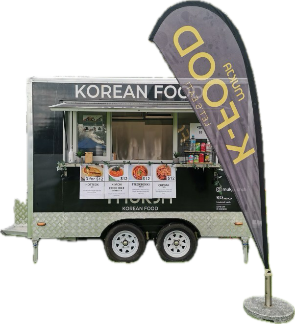

Tteokbokki is a beloved Korean street food featuring chewy rice cakes drenched in a sweet and spicy chili sauce, creating a delicious harmony of flavors with fish cakes
Indulge in our Korean Fried Chicken, perfectly crispy and coated in a mouthwatering sweet & spicy sauce. A delightful harmony of flavors that will satisfy your craving for the perfect blend of crunchy and saucy goodness!
Savor the deliciousness of our Kimchi Fried Rice, topped with crispy seaweed (gim) for a perfect blend of flavors and textures.
Enjoy our delicious Triangle Kimbap – a delightful combination of rice wrapped in crispy dried seaweed (gim) and filled with a variety of tasty toppings. Choose from options like Bulgogi, Spicy Pork🌶️🌶️, Tuna Mayo, or Tuna Mayo with Stir-Fried Kimchi🌶️
Crispy on the outside and filled with savory vegetarian goodness, our deep-fried dumplings are a delightful treat cooked in fresh oil.
Savor the goodness of our corndogs – a perfect blend of fish sausage or melty mozzarella encased in a crispy golden shell. A tasty delight on the go!
Korean traditional rice cake.
Fried rice with Korean traditional dish made with fermented cabbage.
Crisply fried chicken in fresh oil served with our homemade Korean sweet&spicy sauce.
The one and only Christchurch night market! It opens every Thursday from 6pm to 10pm. With over 80 stalls ranging from food to crafts, this unique night market is a great place for you and your friends to hang out.
New market from this to this.